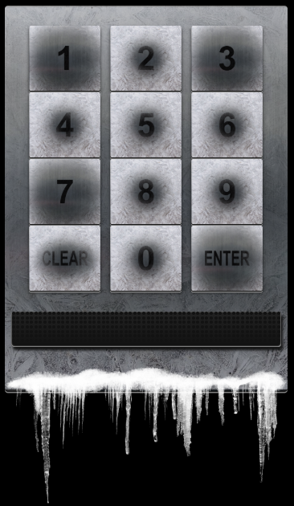

Frosty Keypad¶
Challenge¶
The initial dialog with Tangle Coalbox:
Tangle Coalbox
Hey kid, it's me, Tangle Coalbox.
I'm sleuthing again, and I could use your help.
Ya see, this here number lock's been popped by someone.
I think I know who, but it'd sure be great if you could open this up for me.
I've got a few clues for you.
1. One digit is repeated once.
2. The code is a prime number.
3. You can probably tell by looking at the keypad which buttons are used.
The hint from our badge:
Frosty Keypad From: Tangle Coalbox One digit is repeated once, it's prime, and you can see which keys were used
The challenge:
Solution¶
Looking at the keypad, we noticed that the 1, 3 and 7 keys had a large smear indicating that these are the keys we need.
Knowing that one of the digits is repeated twice (we needed a 4-digit number), we created a Python script (frostykeypad.py) that finds the list of prime numbers between 1137 and 7731 containing only the digits 1, 3 and 7.
lower = 1137
upper = 7731
for num in range(lower,upper + 1):
if "2" in str(num) : continue # discard the number if it contains a 2
elif "4" in str(num) : continue # discard the number if it contains a 4
elif "5" in str(num) : continue # discard the number if it contains a 5
elif "6" in str(num) : continue # discard the number if it contains a 6
elif "8" in str(num) : continue # discard the number if it contains a 8
elif "9" in str(num) : continue # discard the number if it contains a 9
elif "0" in str(num) : continue # discard the number if it contains a 0
for i in range(2,num): # check if prime
if (num % i) == 0:
break
else:
print(num)
Running this script produced the following output:
1171
1373
1733
1777
3137
3313
3331
3371
3373
3733
7177
7331
7333
7717
We then manually eliminated the numbers where the same digit appears 3 times, producing the following:
1373
1733
3137
3371
7331
We then entered these numbers into the lock in order shown until the door opened.
The correct combination was 7331
Hints¶
Tangle Coalbox provides the following hint in his dialog after solving the terminal challenge:
Tangle Coalbox Yep, that's it. Thanks for the assist, gumshoe. Hey, if you think you can help with another problem, Prof. Banas could use a hand too. Head west to the other side of the quad into Hermey Hall and find him in the Laboratory.